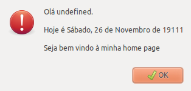
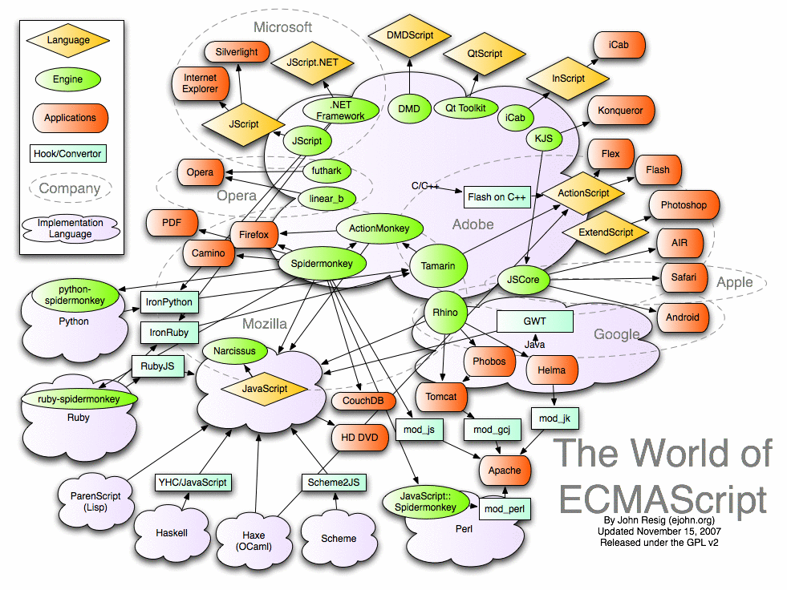

Você realmente sabe JavaScript?
Anhanguera Educacional - Campus Osasco
22/05/2013
Eu
Plínio Balduino - desenvolvedor e curioso
@p_balduino


Um pouco de história
Criado em 1995 por Brendan Eich
Submetido ao ECMA em 1996
Nos primórdios...

Quem nunca usou aqueles scripts prontos nas páginas do Geocities?
Nos primórdios...
Eu já
/o\
Definição
JavaScript é uma linguagem:
- Dinâmica
- Orientada a objetos
- Prototipada
- Funcional
- Muito mais legal do que parece
Dinâmica
Como o Ruby
var x = 1;
var y = "oh yeah!";
eval("alert('meh');");
Orientada a objetos
// JavaScript
function Carro(){
this.buzinar = function(){
return "biii!"
};
this.andar = function(){
return "andando"
};
}
var gol = new Carro();
gol.andar();
// Java
public class Carro {
public String buzinar() {
return "biii!";
}
public String andar() {
return "andando";
}
}
Carro gol = new Carro;
gol.andar();
Prototipada
Ao invés de herança, aqui é usada prototipação
// vamos usar a mesma classe Carro
var gol = new Carro();
var veloster = new Carro();
console.log(gol.portas); // gol não tem porta
console.log(veloster.portas); // veloster também não tem
Carro.prototype.portas = 4;
console.log(gol.portas); // gol com quatro portas
console.log(veloster.portas); // veloster com quatro portas?
veloster.portas = 3; // agora sim
console.log(veloster.portas); // veloster tem três portas
console.log(gol.portas); // gol continua com quatro portas
Funcional
Minha parte preferida
JS is Lisp in C's Clothing
Douglas Crockford
Funcional
Você pode, e deve, passar funções como parâmetros
; Scheme \o/
(define calculate (lambda (op v1 v2) (op v1 v2)))
(define sum (lambda (a b) (+ a b)))
(define mult (lambda (x y) (* x y)))
(calculate sum 2 3) ; retorna 5
(calculate mult 2 3) ; retorna 6
// JavaScript
function calculate(op, v1, v2) {
return op(v1, v2);
}
function sum(a, b){
return a + b;
}
function mult(x, y){
return x * y;
}
calculate(sum, 2, 3); // retorna 5
calculate(mult, 2, 3); // retorna 6
Funcional
jQuery usa isso O TEMPO INTEIRO
$(function(){
console.log("DOM loaded")
});
$(".clickable").click(function(){
console.log(this + " was clicked")
});
Funcional
Também é permitido que uma função retorne outra função
// Currying
function adder(x){
return function(y){
return x + y;
}
}
var add_five = adder(5);
add_five(10); // retorna 15
O retorno dos parênteses
// Para matar as saudades do Lisp
function adder(x){
return function(y){
return x + y;
}
}
var add_five = ((adder)(5));
((add_five)(10)); // retorna 15
Tratamento de erros
Pode pular que é raso
try{
cause_an_error();
} catch(err) {
console.log(err.description);
};
// imprime 'cause_an_error is not defined'
JSON
JavaScript Object Notation
É a forma mais simples e rápida de criar ou transmitir objetos JavaScript
Use JSON ao invés de XML quando usar AJAX e seja feliz
No Rails é gerado automagicamente usando objeto.to_json ou render :json => object
JSON
{
nome : "texto",
"com espaço": true,
lista : [1, 2, 3, 4],
objeto : {
inception : "dream",
outra_lista : [4, 3, 2, 1]
}
}
JavaScript não é só web
Ele está em toda parte

Em sua próxima aplicação...
Por que não usar uma linguagem realmente poderosa e produtiva?
Referências
- http://javascript.crockford.com/javascript.html
- http://en.wikipedia.org/wiki/Javascript
- http://en.wikipedia.org/wiki/Scheme_(programming_language)
- http://stackoverflow.com/q/16509
- http://mitpress.mit.edu/sicp/
- http://dynjs.org/
←
→
/